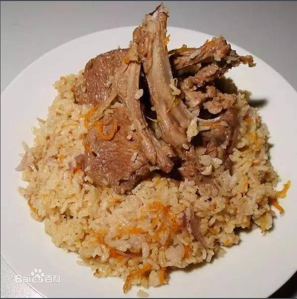
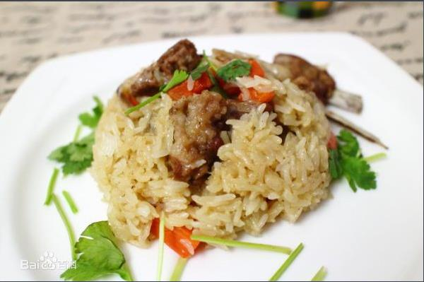

基本介绍
抓饭是中亚、西亚地区的菜品，维吾尔语称坡罗（polo）波斯语称帕劳（palaw），土耳其语称皮拉乌（pilav），在我国新疆主要流传于维吾尔、哈萨克、土克曼、乌兹别克等民族中。
主要的原料是新鲜羊肉，胡萝卜、洋葱、清油、羊油和大米，新疆本地的正宗抓饭一般是不放孜然粉、山楂、酱油的，而清真菜肴更是不能放含酒精的料酒的。不过根据所在地食材的品质和个人的口味可以酌量添加自己喜欢的配料。
制作方法
1、大米用水泡半个小时，羊肉切小块，胡萝卜切丁或丝，洋葱切丁。
2、锅里放油，放入洋葱炒出香味，再放入羊肉翻炒。放盐，孜然，鸡精，胡萝卜一起翻炒。
3、倒水没过羊肉煮大约十分钟。
4、把所有炒好的菜，肉，汤和葡萄干，全部倒入电饭锅，把泡好的米饭均匀撒在上面一层，1：2比例为好，开始焖20分钟。
5、打开后，菜，肉，米饭拌匀即可食用
历史渊源
关于抓饭还有一段动人的传说。相传在一千多年前，有个叫伊本·西拿的医生，在他晚年的时候，身体很虚弱，吃了很多药也无济于事，后来他研究了一种饭，进行食疗。他选用了牛羊肉、胡萝卜、洋葱、清油、羊油和大米加水加盐后小火焖熟。这种饭具有色、味、香俱全的特点，很能引起人们的食欲。于是他早晚各吃一小碗，半月后，身体渐渐地恢复了健康，周围的人都非常惊奇，以为他吃了什么灵丹妙药。后来，他把这种“药方”传给了大家，一传十，十传百，便成为现维吾尔族人普遍吃的抓饭了。这个传说是否真实，我们且不去考究，但抓饭是一种营养十分丰富的食品，却是实实在在的。清油、黄油、洋葱、胡萝卜和大米都是含多种维生素的补品，特别是胡萝卜被人们称为“小人参”和“地参”。用这样的原料做的饭，当然补人了。
